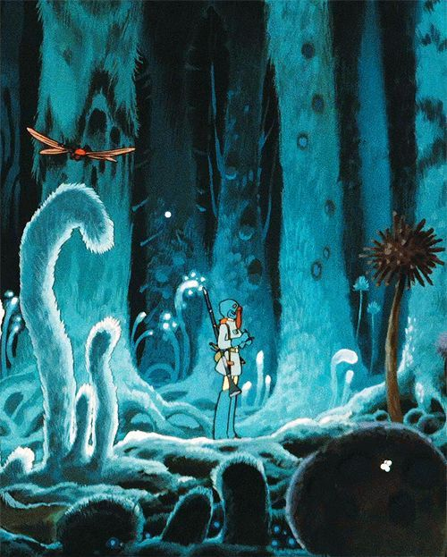
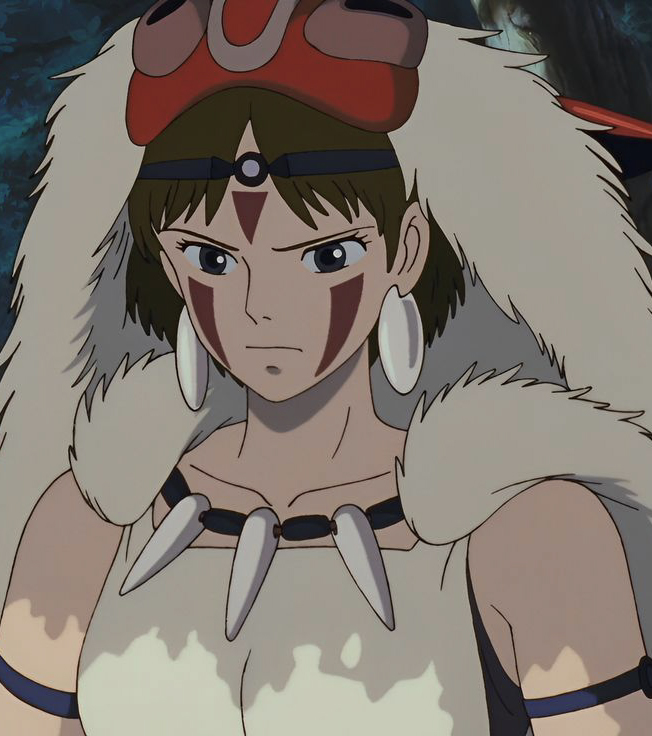
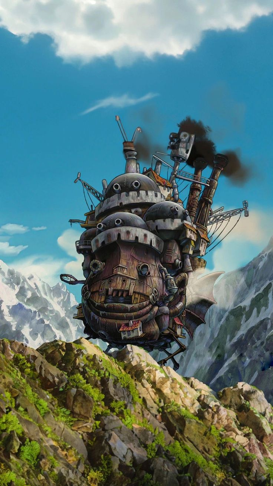

Miyazaki Hayao
Miyazaki Hayao ( born January 5, 1941, Tokyo, Japan ) is an influential Japanese anime director whose lyrical and allusive works have won both critical ＆ popular acclaim.
His notable films include Princess Mononoke (1997),Spirited Away (2001), Howl’s Moving Castle (2004), and The Boy and the Heron (2023).

Naussica
(1984)
Set one thousand years from now, the Earth is ravaged by pollution and war. In the Valley of the Wind lives Nausicaä, Princess of her people.
More >

Mononoke
(1997)
On a journey to find the cure for a Tatarigami's curse, Ashitaka finds himself in the middle of a war between the forest gods and Tatara...
More >
Spirted Away
(2001)
A sullen 10-year-old girl wanders into a world ruled by gods, witches and spirits, and where humans are changed into beasts.
More >

Howl's Moving Castle (1984)
When an unconfident young woman is cursed with an old body by a spiteful witch, her only chance of breaking the spell lies with...
More >
Takahata Isao
MIsao Takahata (高畑 勲, Takahata Isao, October 29, 1935 – April 5, 2018) was a Japanese director, screenwriter and producer. A co-founder of Studio Ghibli,
he earned international critical acclaim for his work as a director of Japanese animated feature films.
Copyright © 2024 Danny Peng. All rights reserved.